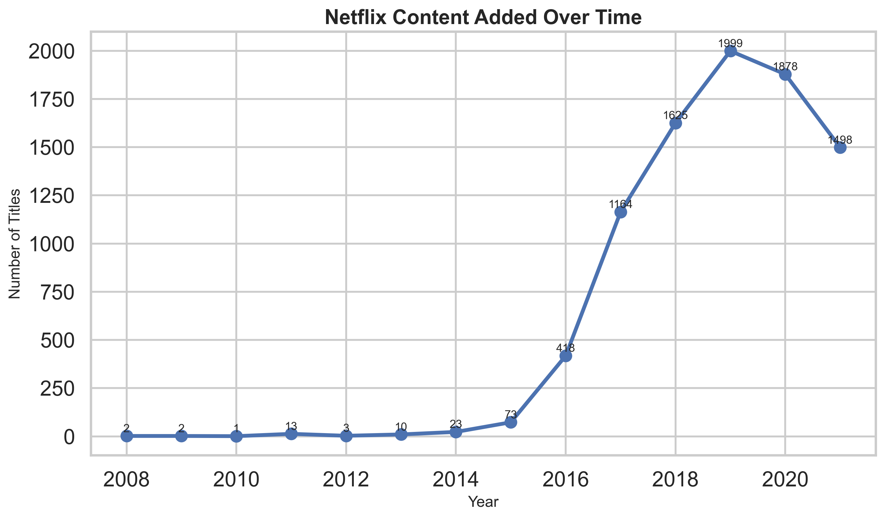
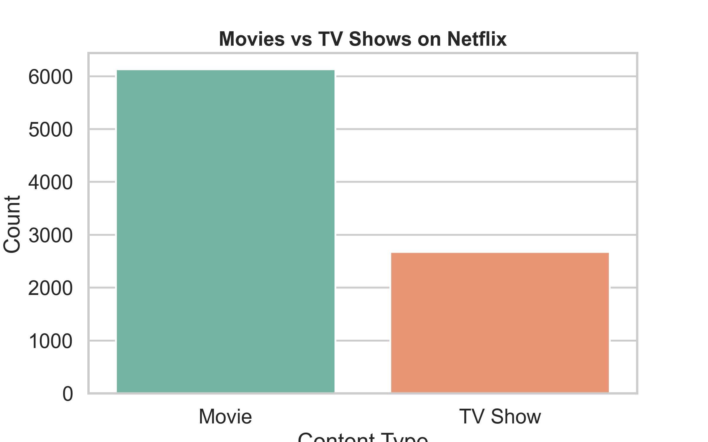
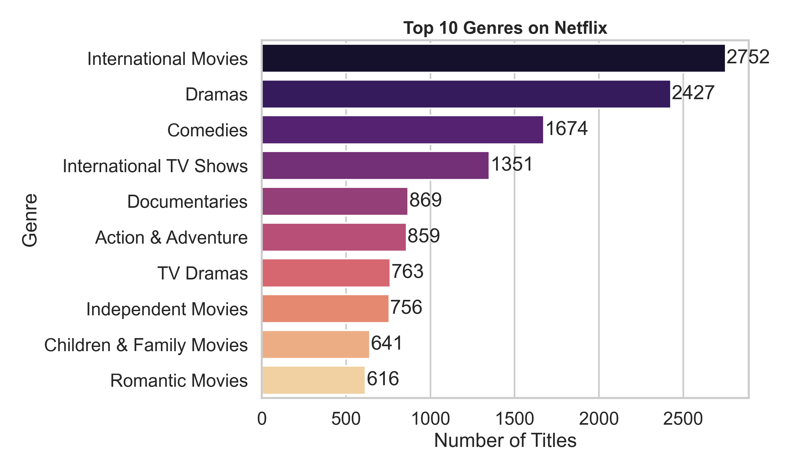
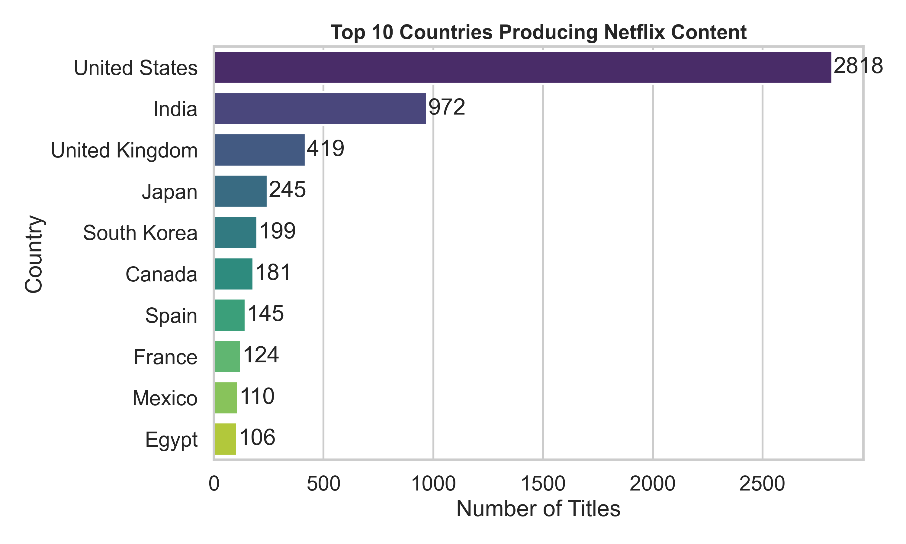
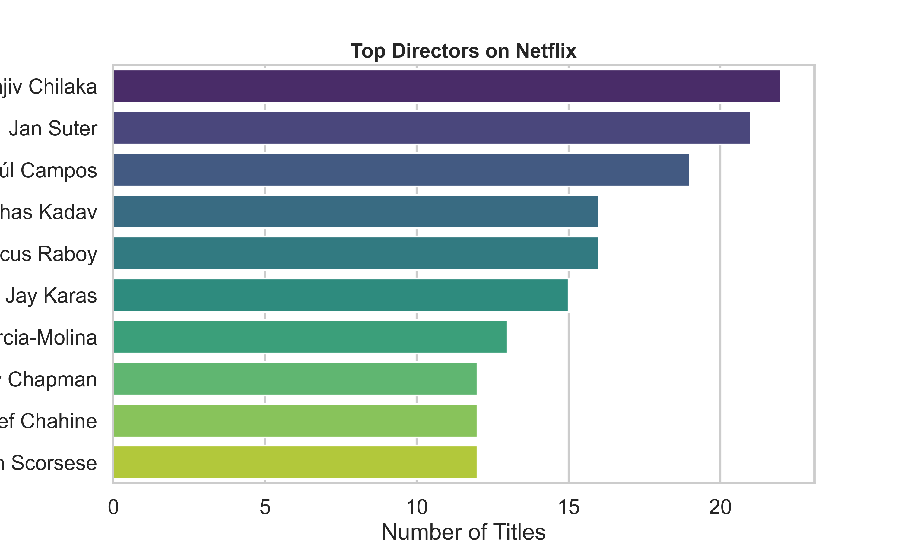

Architecture

Exploratory data analysis of Netflix Movies and TV Shows dataset to uncover content trends, genre dominance, and global production patterns.
View GitHub RepositoryThis project analyzes the Netflix Movies and TV Shows dataset using Python, Pandas, Matplotlib, and Seaborn to uncover insights about the platform's content strategy.





Dataset → Data Cleaning → Exploratory Analysis → Visualization → Insights
git clone https://github.com/bindhusaahithi/Netflix-Analysis.git cd Netflix-Analysis pip install pandas matplotlib seaborn jupyter notebook